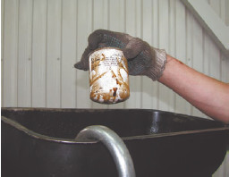
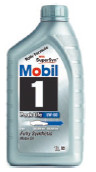
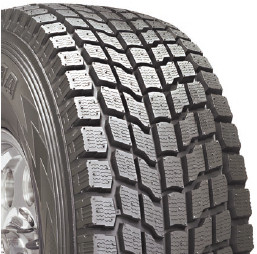
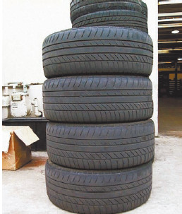
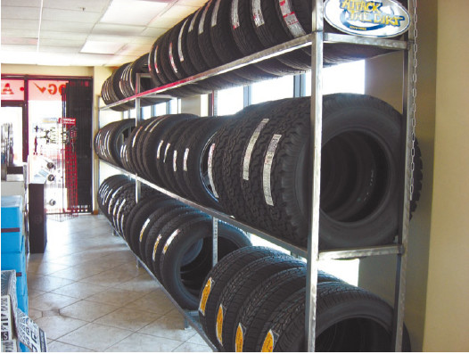
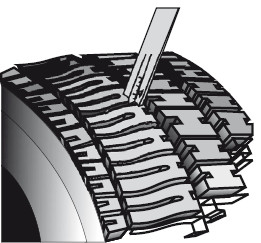
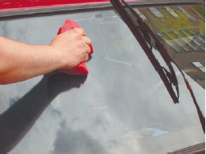

Эксплуатационные вопросы
Можно ли использовать бензин с более высоким октановым числом, чем указано в инструкции по эксплуатации автомобиля?
Подобный вопрос часто возникает у начинающих автомобилистов, которые искренне считают, что раз топливо дороже, значит, оно лучше, а главное – лучше для автомобиля. Но дело в том, что топливо с более высоким октановым числом характеризуется медленным горением с высокой температурой. Процесс горения при этом иногда продолжается во время открытия выпускных клапанов. И если двигатель конструктивно не приспособлен к такому топливу (а вот это как раз и указано в инструкции по эксплуатации автомобиля, где определено топливо, необходимое конкретной марке и модели машины), то результатом использования «лучшего» бензина будут прогоревшие выпускные клапаны и поршни и, как следствие, выход двигателя из строя.
Можно ли использовать бензин с более низким октановым числом, чем указано в инструкции по эксплуатации автомобиля?Подобную ошибку часто совершают те, кто купил подержанный автомобиль и пытается сэкономить на его содержании. Порыв, конечно, понятный, только результат получается прямо противоположный. Топливо с низким октановым числом характеризуется взрывным характером горения (то есть оно не горит, а взрывается). Когда двигатель изначально сконструирован в расчете на данный тип горения, все в порядке. Но вот если нет…
Взрыв – это детонация. А от детонации двигатель, не приспособленный к такому топливу, попросту разрушается. Да, не сразу, ведь топливо – не граната. Однако разрушение происходит довольно быстро, и ресурс двигателя вырабатывается прямо на глазах. Ремонт же двигателя, который бережливый хозяин «кормил» низкооктановым топливом, обходится гораздо дороже, чем сэкономленные на топливе деньги.
Можно ли использовать моторное масло, отличное от того, которое указано в инструкции по эксплуатации автомобиля?Прежде чем «улучшать» (из самых добрых побуждений и нежных чувств к своему автомобилю) или «ухудшать» (ради экономии) моторное масло, без которого двигатель вашего автомобиля выйдет из строя, вспомните, что это масло в спецификации на двигатель указано в разделе «Конструкционные материалы». То есть изменить сорт масла, который производитель считает правильным, – то же самое, что изменить конструкцию двигателя. Если вас зовут не Генри Форд, не Отто Дизель и не Фердинанд Порше, то подумайте – настолько ли хорошо вы разбираетесь в автомобильных двигателях, чтобы вносить изменения в их конструкцию.
Если синтетическое моторное масло лучше минерального, то, может быть, можно улучшить свойства минерального масла, добавляя в него «синтетику»?Классиком сказано: «В одну телегу впрячь не можно коня и трепетную лань.» – но любителей улучшить имеющиеся качества путем добавок от этого не уменьшается. Во-первых, вопрос не в том, какое масло лучше вообще, а в том, какое именно необходимо конкретному автомобилю. А это указано в инструкции по эксплуатации. Во-вторых, различные типы масел несовместимы и нельзя добавлять «синтетику» или «полусинтетику» в минеральное моторное масло (с целью его улучшения) и наоборот (с целью экономии). В результате полученная смесь загустевает, что существенно затрудняет работу двигателя.
При смене масла я решил вместо полусинтетического залить синтетическое, так как оно лучше. Однако появились неисправности двигателя (посторонние звуки, плохой разгон, «схватывание» и т. д.). Что делать?Обычно такое случается, когда при замене масла пренебрегают промывкой системы. А ведь различные типы масел несовместимы, и получившийся в результате гель затрудняет работу двигателя.
Обязательно ли менять моторное масло в те сроки, которые указаны в инструкции по эксплуатации автомобиля? Может быть, если масло дорогое, хорошего качества, а автомобиль эксплуатируется бережно, допустим и больший пробег без замены масла?Неважно, насколько хорошего качества было масло тогда, когда оно приобреталось. Любое моторное масло подвержено старению. В него попадают частицы сажи во взвешенном состоянии, на деталях цилиндропоршневой группы происходит нагарообразование. В масло могут попадать и крупинки металла, ведь смазываются трущиеся поверхности, с которых микрочастицы металла и попадают в масло. В результате через некоторое время (величина пробега каждой марки и модели автомобиля указана в инструкции по эксплуатации и зависит от условий эксплуатации) масло превращается из смазочного вещества в настоящий абразив, который не только не облегчает работу двигателя, а напротив – может послужить причиной его поломки.
Обязательно ли одновременно осуществлять замену моторного масла и масляного фильтра?Многие начинающие водители считают, что достаточно заменить моторное масло в те сроки, которые указаны в инструкции по эксплуатации автомобиля, и все будет хорошо, а масляный фильтр можно заменить и несколько позже (рис. 4.9). Опытные водители знают, что бессмысленно заменять масло, оставляя старый масляный фильтр, ведь в фильтре тоже скапливается множество разнообразных микрочастиц, которые отнюдь не способствуют бесперебойной работе двигателя. В результате только что залитое свеженькое моторное масло оказывается загрязненным, как только проходит через старый масляный фильтр.

Рис. 4.9. Замена масляного фильтра
Летом менялись моторное масло и масляный фильтр. Пробег автомобиля был минимальным, и вновь менять масло было еще рано. Но в холода начались проблемы с запуском двигателя, а затем двигатель и вовсе заклинило. Почему?Масло перед зимней эксплуатацией требует замены независимо от его «новизны». «Летнее» масло имеет обыкновение загустевать на морозе, а это может привести не просто к небольшим проблемам с «холодным стартом», а даже к заклиниванию двигателя, ведь загустевшее масло в первые несколько минут после пуска двигателя не поступает ни к деталям цилиндропоршневой группы, ни к газораспределительному механизму. Поэтому следует использовать морозоустойчивое масло вязкостью по SAE 5W-50, 5W-40, 5W-30 (рис. 4.10).

Рис. 4.10. Моторное масло 5W-50
Если в двигатель залито такое масло, то возможен запуск даже при -30 °C. В том случае, если автомобиль ночует в гараже, подойдет масло 10W-30, 10W-40. Ну а для того, чтобы автомобиль заводился при температуре ниже -50 °C, можно использовать масло с зимним показателем вязкости 0W.
Недавно заменили масло и масляный фильтр, но автомобиль стал хуже разгоняться. Почему?Такое случается, когда устанавливается несертифицированный, дешевый масляный фильтр. Дело в том, что различные производители используют фильтрующие элементы с разным гидравлическим сопротивлением. И обычно в дешевых масляных фильтрах ставится очень плотная бумага, то есть высокое гидравлическое сопротивление. И чем она плотнее, тем больше мощности двигателя уходит на прокачку масла, чтобы поддерживать необходимое давление масла в системе двигателя. Отсюда и падение мощности двигателя.
Я недавно приобрел автомобиль б/у и поехал на СТО заменить масло и масляный фильтр. Мне сказали, что нужно менять еще и тормозную жидкость. Я спрашивал у знакомых – никто из них никогда не менял тормозную жидкость, а за рулем они уже не один год. Получается, что на этой СТО меня пытаются обмануть?Если вы собираетесь последовать примеру своих знакомых и не заменять тормозную жидкость годами, то вам необходимо срочно начинать осваивать приемы высшего водительского мастерства, в частности – как тормозить, когда отказала рабочая тормозная система.
Температура кипения тормозной жидкости составляет около 230–260 °C. Но она гигроскопична, то есть со временем вбирает в себя воду, температура кипения которой – 100 °C. В результате температура кипения тормозной жидкости понижается, и чем дольше ее не заменять, тем больше снижается температура кипения. В экстремальной ситуации чаще всего используется резкое торможение, при котором тормоза (и тормозная жидкость!) сильно нагреваются. Если же в тормозной жидкости достаточно воды, то она при резком торможении может закипеть, а тогда педаль тормоза свободно уходит в пол – рабочая тормозная система отказывает. Водитель экстра-класса еще может справиться с ситуацией, применив нетрадиционные приемы торможения, и то не всегда они срабатывают. Ну а что касается обычного водителя или новичка за рулем, то в этом случае ДТП не избежать.
Когда наступили холода, у меня появились проблемы с тормозной педалью: после нескольких первых торможений она становится очень жесткой, и чтобы педаль вновь стала нормальной, нужно несколько раз на нее нажать. Потом проблема исчезает, и дальше уже все в порядке. Раньше такого не было. Что случилось?Судя по всему, вы давно не меняли тормозную жидкость и она набрала воды. В результате вода замерзает в холодную погоду, а при нажатии тормоза перекрывает тормозной жидкости путь к тормозным цилиндрам – и вы имеете жесткую педаль. А после нескольких нажатий на педаль тормозная жидкость начинает разогреваться и замерзшая вода тоже, поэтому все нормализуется. Если вы заинтересованы в сохранении рабочей тормозной системы, то следует заменить тормозную жидкость.
Зимой мой автомобиль занесло на повороте и я врезался в другую машину. Мне сказали, что причина заноса в летних покрышках. Но они были совершенно новые, хорошего качества, с глубоким протектором. Правы ли те, кто утверждает, что даже хорошая летняя резина не годится для зимы?Это еще один пример «экономии», когда на летней резине пытаются отъездить зиму. Но достаточно одного взгляда на два колеса – летнее и зимнее, – и разница становится очевидна: у зимней резины ощутимо глубже протектор, предназначенный для того, чтобы обеспечивать сцепление со скользким, заснеженным и обледенелым дорожным покрытием (рис. 4.11). Попытки начинающих водителей оставаться «зимой и летом одним цветом» приводят разве что к ДТП. Замена летней резины на зимнюю рекомендуется еще даже до наступления настоящих холодов. Как только столбик термометра опустился до +7 °C, это сигнал к тому, что покрышки следует менять.

Рис. 4.11. Зимняя резина
У меня были хорошие покрышки, но они немного «полысели». Можно ли ездить на них летом в сухую погоду?Шина считается исчерпавшей свой ресурс, если износ протектора достиг предельной величины или возникли какие-либо повреждения покрышки. Предельная остаточная высота рисунка протектора составляет 1,6 мм для легковых автомобилей, и если протектор ниже, то колеса следует заменить. «Лысая» резина особенно подвержена аквапланированию (потере сцепления колес с дорожным полотном на водяном пятне), а летом, как известно, бывает не только солнечная погода, но и дожди. Кроме того, «лысая» резина вполне может послужить причиной бокового сноса колес на песчаном покрытии (причем на абсолютно сухом), а боковой снос колес очень опасен.
По данным исследований, риск дорожно-транспортного происшествия на 20 % ниже для автомобилей, имеющих шины с глубиной рисунка протектора в пределах 2–3 мм, чем для автомобилей, имеющих шины с глубиной протектора менее 2 мм. Когда глубина рисунка протектора увеличивается до 3–5 мм, риск ДТП снижается на 10 % по сравнению с глубиной рисунка, равной 2–4 мм. Увеличение глубины рисунка протектора до значения более 5 мм не имеет статистически значимого влияния на риск попасть в ДТП[1].
У меня были хорошие зимние покрышки, которые отлично отъездили зиму, но летом они почему-то быстро «полысели», а ведь поездок было не так и много. Почему?Казалось бы, если зимняя резина так хороша, то она должна годиться и летом. Почему бы не приобрести комплект зимней резины и не ездить на нем весь год? То, что это запрещено ПДД, еще не остановило ни одного начинающего (и не только) автолюбителя. Останавливает тот факт, что от зимней резины к концу лета остаются лишь воспоминания – протектор стирается практически до корда. В результате все равно приходится приобретать новый комплект к зиме, а ведь зимняя резина дороже летней.
Распространено мнение, что шины для различных сезонов различаются только рисунком протектора (высота рисунка протектора на зимней резине выше, чем на летней). Однако есть и другие различия: химический состав резины, конструкция и т. д. Летние шины в морозную погоду теряют эластичность, сцепление с дорогой у них гораздо ниже, чем у зимних шин. Вождение в этом случае требует от водителя особого внимания и напряжения. Состояние шин в сочетании с психофизиологическим состоянием водителя является прямо-таки приглашением к ДТП.
Протектор зимних шин в летнее время подвержен интенсивному износу за счет дорожного покрытия и температуры. Отличная зимняя резина, которая могла бы прослужить несколько сезонов, обычно не выдерживает полноценно даже одного летнего периода, а если и выдерживает, исходя из остаточной высоты рисунка протектора, то из-за резкого ухудшения других качеств становится непригодной для зимней эксплуатации.
Я хранил зимнюю резину в гараже, но когда собрался ее поставить, оказалось, что шины деформировались. Может быть, гараж (металлический) слишком сильно нагревался на солнце летом?Начинающие автовладельцы хранят шины обычно либо стопкой в углу гаража (удобно, аккуратно, занимают немного места) (рис. 4.12), либо в подвешенном виде (опять же с целью экономии небольшого гаражного пространства). В результате к следующему сезону эксплуатации шины приходят в негодность – они попросту деформируются, как любое резинотехническое изделие под воздействием силы тяжести. Деформируется протектор у лежащих ниже шин, а при длительном хранении (к примеру, в зимний или летний сезон) возникает изгиб брекера и изменение профиля протектора, который в поперечном сечении принимает округлую форму. При использовании такой шины уменьшается пятно контакта колеса с дорогой, ухудшается сцепление и появляется интенсивный износ протектора в центральной части шины.

Рис. 4.12. Хранение покрышек стопкой приводит к их деформации (так можно хранить только короткое время)
Шины должны храниться в вертикальном положении, но ни в коем случае не в подвешенном виде (рис. 4.13). Опорой должна служить плоскость, а лучше полукруглая поверхность. Такое хранение обеспечивает минимальную деформацию шины. Не стоит использовать для хранения шин тонкие трубы, натянутый трос или острое ребро швеллера – они увеличивают нагрузку на отдельных небольших участках, что способствует увеличению деформации.

Рис. 4.13. Правильное хранение шин
Когда шины хранятся долго, их нужно поворачивать каждые два-три месяца, меняя зону опоры. Таким образом исключается изменение формы боковин и протектора, а также уменьшается дисбаланс шины.
Хранить шины нужно в закрытом, чистом и проветриваемом помещении. Оно должно быть темным, так как ультрафиолет является разрушающим фактором для резины. Под навесом на открытом воздухе шины можно хранить не больше месяца, а без навеса, не защищая от солнца и изменений погоды, вообще нельзя. Значительные колебания температуры и относительной влажности вызывают деформацию в шинах, резина становится хрупкой и подверженной разрывам при нагрузке. При резких перепадах температуры, что случается осенью и весной, в резине появляются микротрещины, что значительно ухудшает эксплуатационные свойства шин. Такие шины «подтравливают» воздух, а также рвутся, особенно при езде с частыми поворотами.
Можно ли ставить на автомобиль покрышки б/у, особенно зимние? Ведь покрышки должны быть качественными, а поношенная резина «лысовата». Но на рынке предлагают такие покрышки по приемлемой цене, а новые очень дорогие. Знакомые говорят, что можно взять и б/у, если они не очень выезжены, а я как-то сомневаюсь.Подержанные покрышки бывают разными. Чтобы их покупать, нужно уметь выбирать, отличать выезженную, «лысую» покрышку с различными дефектами или после ремонта от той резины, которая еще может довольно долго послужить, чей ресурс выработан на 5-25 %. На нашем рынке подобных покрышек довольно много, и цены на них вполне демократичные.
Покрышки б/у хороши тем, что за достаточно небольшие деньги можно приобрести резину высокого качества известного производителя в очень хорошем состоянии. Такие покрышки, даже с частично выработанным ресурсом, будут лучше, чем дешевые варианты, которые предлагают те же китайские производители.
В основном подержанные покрышки попадают на наш рынок от западных страховых компаний (во многих случаях при повреждении одного колеса производят замену всех четырех – при наличии КАСКО), от лизинговых компаний (замена колес производится при проведении планового ТО, а зачастую на ТО автомобиль попадает с практически новой резиной), от производителей автомобилей (при испытаниях новых моделей используются различные типы покрышек, которые потом, естественно, уже не годятся для установки на новенькие машины с конвейера). Самый худший вариант – покрышки, которые скупаются на шиномонтажах и в автосервисах. Тут могут быть любые проблемы, и большинство жалоб владельцев автомашин на покрышки б/у связано именно с такой резиной.
Следует учитывать, что, если продавец поношенных покрышек утверждает, что его товар чуть ли не прямо с магазинной полки, а проездили эти колеса максимум неделю, это не означает, что его слова соответствуют истине. Покрышки следует тщательно проверить, прежде чем принимать решение о покупке.
В первую очередь покрышка должна быть осмотрена со всех сторон, в том числе изнутри. Если предлагают резину, уже смонтированную с дисками, то как бы она ни была красива внешне и дешева, от такой покупки лучше отказаться. Дело в том, что осмотр изнутри позволяет определить, ремонтировалась ли покрышка, были ли проколы и т. д. (с внутренней стороны сразу видны следы ремонта – жгутики, заплатки). Покрышки после ремонта не рекомендуются даже по самой привлекательной цене – не исключена вероятность повторного разрыва в том же месте, да и разбалансировка покрышки будет достаточно частой.
Затем следует осмотреть индикаторы износа – поперечные выступы по дну канавок протектора (узкая полоска, выступ или хребет высотой обычно 1,6 мм, виднеющиеся между блоками протектора и пересекающие протектор от одной плечевой зоны до другой). Когда высота рисунка протектора становится равной высоте индикатора, это означает, что шина достигла предельно разрешенного износа. Так что, сравнивая высоту индикатора с высотой протектора, можно определить, насколько велик ресурс данной шины. Если индикаторы износа отсутствуют, то измерение остаточной высоты рисунка протектора следует проводить в местах наибольшего износа (рис. 4.14).

Рис. 4.14. Измерение остаточной высоты рисунка протектора
Примечание
Следует помнить, что предельная остаточная высота рисунка протектора для легковых автомобилей составляет 1,6 мм.
При выборе покрышек б/у очень важен такой параметр, как равномерность износа шины. Если долго ездили на несбалансированном колесе, при неотрегулированных развале/ схождении, нарушенной геометрии кузова или если стиль вождения был очень агрессивный, то колесо будет изношено неравномерно, а такие шины прослужат недолго.
Почему зимой все было нормально, но как только стало тепло, двигатель начал перегреваться?Как ни удивительно, но перегрев двигателя в этом случае чаще всего вызван не какими-либо неполадками, а лишь тщательной подготовкой автомобиля к зимней эксплуатации. Чтобы облегчить «холодный старт», устанавливается утеплитель подкапотного пространства, а по весне его просто забывают снять.
Я купил новый автомобиль и ездил на нем не так уж много – не более 5 тыс. км. Теперь у машины повышенный расход топлива, а на СТО говорят, что засорился воздушный фильтр. Но, насколько я знаю, воздушный фильтр следует менять каждые 20 тыс. км, а не 5 тыс. км. Может ли так быть, что он изначально был некачественный, и могу ли я предъявить претензии автосалону, где приобрел автомобиль?Обычно воздушный фильтр подлежит замене действительно через каждые 20 тыс. км пробега автомобиля, но это при нормальных условиях эксплуатации. Если же машина эксплуатировалась в экстремальных условиях (например, на очень пыльных дорогах), то воздушный фильтр следует менять через каждые 5 тыс. км пробега, а иногда и чаще. При экстремальных условиях эксплуатации нужно регулярно контролировать состояние воздушного фильтра, чтобы не допускать его критического загрязнения.
Я заливал в систему охлаждения тосол разных цветов (красный и синий) – не хватило тосола одного типа. Теперь система охлаждения не работает. Почему?Хотя и тот и другой тосол предназначены для системы охлаждения, но они не могут заливаться одновременно. Дело в том, что при смешивании получается гель, который буквально забивает систему охлаждения.
Почему на лобовом стекле видны радужные разводы и туманная пленка? Особенно это заметно в сумерки и в темное время суток.Лобовое стекло нужно регулярно мыть с применением специальных моющих средств. Радужные разводы – это осевшие на стекле остатки нефтепродуктов (например, выхлопы автомобилей), которые не удаляются только с помощью воды (рис. 4.15).

Рис. 4.15. Стекла следует не только поливать водой, но и насухо протирать, чтобы не было разводов
Я недавно купил автомобиль, и сначала все было в порядке, но теперь из кондиционера при включении постоянно идет запах опрелости. Мне посоветовали использовать специальный аэрозоль для кондиционеров, но он не помог. Почему появился этот запах и что делать?Основная причина неприятных запахов из кондиционера – образование бактерий на алюминиевых ребрах внутреннего испарителя. Обычно это является следствием неправильного содержания салона автомобиля (наличие пыли, окурков, пепла, остатков пищи и т. д.), а также проблем с отводом конденсата из испарителя. Если образование бактерий только началось, то аэрозоль окажет эффективное воздействие, но в запущенном случае это не поможет, требуется проводить полную разборку испарителя и его дезинфекцию в хлорированной жидкости. Бывает, что это тоже не помогает и приходится производить замену инфицированного испарителя. Это дорогостоящая операция, и чтобы ее избежать, достаточно не относиться к своему автомобилю как к свалке разнородных вещей, содержать салон в чистоте и каждый день мыть пепельницу.